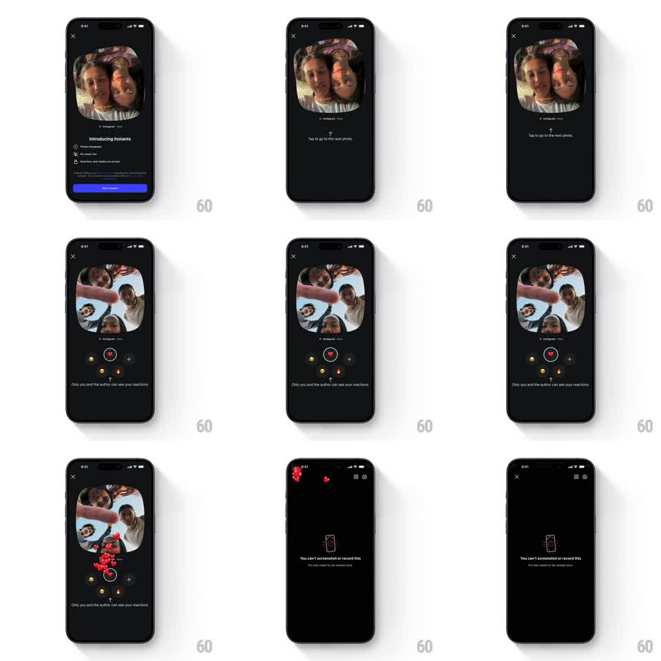

Media
Frame-by-frame

Rebuild this interaction 1:1: Instagram's "Introducing Instants" coachmark flow - an intro sheet walks through the feature, then a guided demo: a shared photo collage fills the screen with a "Tap to go to the next photo" hint, an emoji reaction rail sits at the bottom, tapping the heart sends hearts bursting upward, and a final card explains screenshots are blocked.

Rebuild this interaction 1:1: Instagram's "Introducing Instants" coachmark flow - an intro sheet walks through the feature, then a guided demo: a shared photo collage fills the screen with a "Tap to go to the next photo" hint, an emoji reaction rail sits at the bottom, tapping the heart sends hearts bursting upward, and a final card explains screenshots are blocked. ## Integration Integration: stack-agnostic spec - springs given as stiffness/damping, timed motions as duration + curve; map every value to your framework and animation library of choice. ## Scene Dark full-screen flow: (1) intro sheet with collage preview, "Introducing Instants", three feature bullets, blue "How it works" button; (2) demo screen with the collage (rounded blob mask), hint text "Tap to go to the next photo", reaction rail (heart, fire, laughing emoji + plus); (3) hearts particle burst over the collage; (4) "You can't screenshot or record this" info card. ## Motion spec Pattern: stepped walkthrough with one live interaction. - Screen transitions: content slides up + fades (300ms, ease-out); the collage photo morphs between screens (shared element - it scales from preview size to full-bleed, 350ms). - Demo hint: a small up-chevron bounces above the caption (translateY 0 -> -6px loop, 1s). - Reaction tap: the tapped emoji pops (scale 1 -> 1.4 -> 1, spring ~400/18) and emits 5-8 hearts that float up with drift (translateY -120px, translateX +-20px random, fade out, 800ms, 40ms stagger). - Counter under the rail ticks up with a flip (200ms). - Final card: phone-shield icon draws in (stroke 400ms), copy fades after (150ms delay). ## Calibration - The heart burst is physics-lite: gravity pulls hearts slightly as they rise, giving an arc, not a straight line. - Each beat waits for the user; nothing auto-advances except the hint bounce loop. ## Reduced motion Screens crossfade; one heart floats up slowly; no burst. ## Don't miss - The collage photo is a shared element across the first two screens - it never reloads or jumps. - "Only you and the author can see your reactions" sits under the rail throughout the demo.